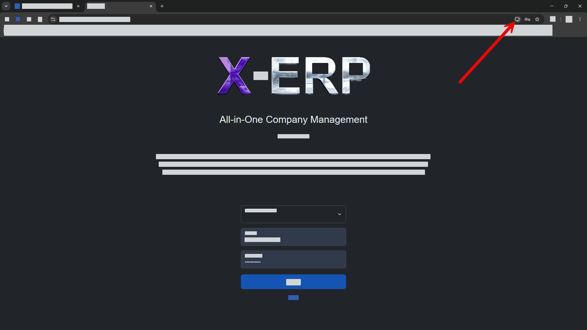

ERP Hilfe
PWA Installation (Progressive Web App)
Einordnung
X-ERP Hilfe > Grundlagen > PWA Installation (Progressive Web App)
PWA-Installation (Progressive Web App)
X-ERP kann als Progressive Web App (PWA) installiert werden. Nach der Installation startet X-ERP wie eine herkömmliche Anwendung in einem eigenen Fenster - ohne Browser-Adressleiste und direkt über ein Symbol auf dem Desktop oder im Startmenü.

Klicken Sie in der Adressleiste Ihres Browsers auf das Installieren-Symbol bzw. auf "App installieren" und bestätigen Sie die Installation. Anschließend wird auf Ihrem System ein eigenes X-ERP-Symbol angelegt.
Für zukünftige Anmeldungen können Sie X-ERP direkt über dieses Symbol starten, ohne den ursprünglichen Login-Link aufzurufen. Mit F11 wechseln Sie in den Vollbildmodus und zurück.